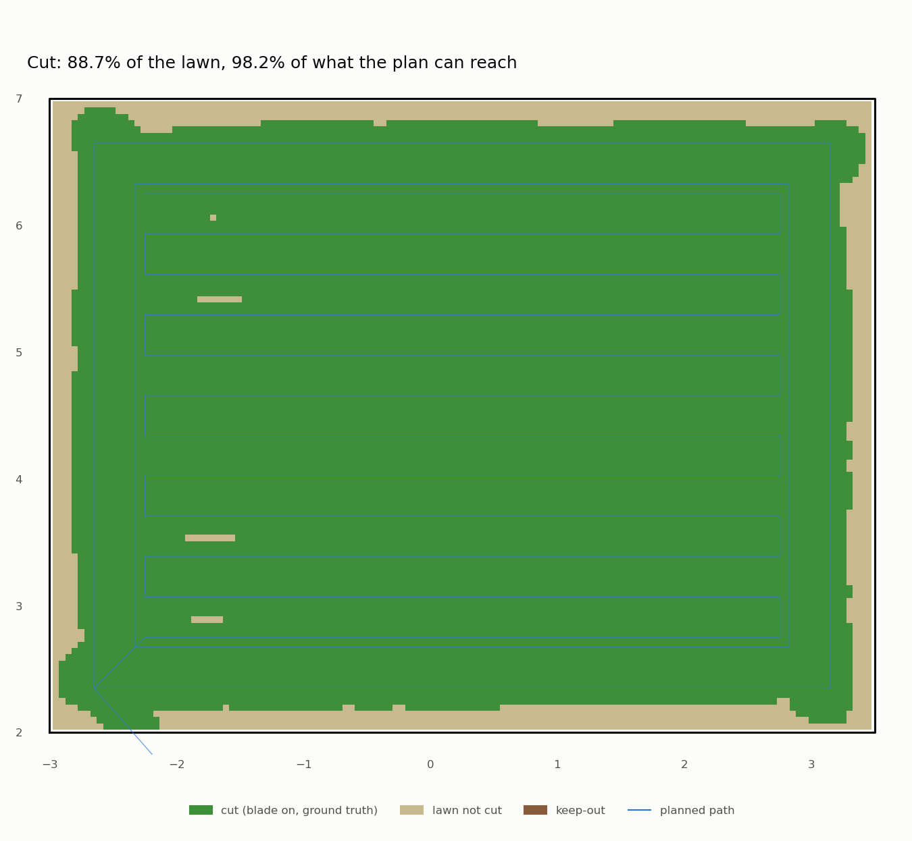

The long-grass rule, and three ways to trap a robot in a patch of grass
Last night's result was uncomfortable: the 3D lidar sees a 10 cm hedgehog in 5 cm grass and loses it in 7 cm grass. Height is all the lidar measures, so the lawn has to stay short enough for an animal to stand out of it. That's the long-grass rule (decision D2): if the uncut grass ahead is too tall, the robot doesn't mow it. It stops the blade, goes home and says the lawn is overdue. An owner switch in the app turns the rule off for one mow.
Building it took one measurement that worked first time, one rule that worked first time, and a clearance that trapped the robot three different ways before we found the version that can't.
Measuring grass with a lidar
The safety gate already knows the height of every return above the local ground (5.1). In the lane the blade is about to cut, 0.6 to 2.0 m ahead and 0.6 m wide, we take the tallest return in each 20 cm cell (that's the grass top there) and then the median over the cells. A hedgehog or a box fills a cell or two, so it moves the median by nothing. Returns over 30 cm (a pole, a wall) aren't grass and are dropped first.
Before trusting it we calibrated it on four lawns of known height, driving straight with nothing in the way:
| Run | Grass (nominal) | Measured (median) |
|---|---|---|
cal-g4-none-3d |
4 cm | 4.1 cm |
cal-g6-none-3d |
6 cm | 5.9 cm |
cal-g8-none-3d |
8 cm | 8.0 cm |
cal-g10-none-3d |
10 cm | 9.9 cm |
Within 2 mm. (The sim's tufts are nominal ±25%, and "tallest per cell" lands near the nominal because the lidar
doesn't hit every tuft's tip.) The gate publishes it as /grass/height, a rolling median over about a second.
The rule
long_grass.py, pure Python with its own tests: when /grass/height stays over the limit (long_grass_m, default
5.5 cm, still Chris's call under D2) for 2 s of mowing, the rule trips once:
- the blade stops immediately;
- the robot keeps following its line with the blade off until it's somewhere a pivot is safe, then goes home;
- after docking, the mission ends
mission_abort: lawn overdue: uncut grass 9.1 cm > 5.5 cm, and the light ring shows the fault.
The 2 s hold is so a single tall clump at a stripe end doesn't end a mission.
The test lawn is the Open patch at 4 cm, with a 9 cm patch in its far corner (GRASS_PATCH).
make long-grass-test mows it twice and analysis/long_grass_report.py judges each run:
| Run | Check | Result |
|---|---|---|
longgrass-6-refuse |
rule tripped | 9.1 cm > 5.5 cm, 0.8 m before the patch |
| blade off | 0.01 s after the trip | |
| blade-on distance inside the patch | 0.00 m | |
| went home, docked, "lawn overdue" | yes |
That half passed on its first real try. The very first attempt doesn't count: mow-run defaults to the 2D lidar,
which measures no grass, so the robot happily mowed the long patch. The grass report said "Lidar: 2d" and we read
it too late. make long-grass-test now sets the 3D lidar itself.
The other half: mow it anyway
With the owner switch on, the robot should mow the long patch. But the gate's clearance was a fixed number set for
4 cm grass (8 cm), and 9 cm grass has tufts up to 11 cm, so the gate stops for the patch like it would for a wall.
"Mow long grass" has to mean the clearance follows the grass. So grass_clearance_auto: clearance = measured
grass × 1.25 + 3 cm (the 5.1 rule), never above a cap (grass_clearance_max_m, 10 cm by default, 16 cm with the
switch on). Then it trapped the robot three times.
Trap 1, driving out of the patch (longgrass-switch-3). The measuring lane starts 0.6 m ahead. Leaving the
patch, the lane reached short grass while 0.9 m of long grass was still in front of the nose. The clearance dropped
to the short grass, the gate stopped for the long grass, and standing still the lane kept seeing short grass:
deadlock. Fix attempt: keep a measurement until the robot has driven past it (an odometer in the gate).
Trap 2: the gate crashed (longgrass-switch-4). Not a grass problem. A STOP during a turn on the spot with
nothing in the corridor ahead made the log line format None, and the safety gate died. With no gate nothing reaches
the motors, so the robot stopped, but a safety node that can be crashed by its own log line is a bug. It had been
there since the pivot circle went in last night; no earlier run had pivot-stopped with an empty corridor. Fixed,
with a test.
Trap 3, pivoting in the patch (longgrass-switch-5). At a stripe end the turn swings the lane onto short grass,
which (by the odometer rule) counts as travel, while the pivot circle around the robot is full of 9 cm grass. Fix
attempt: measure grass where each field looks: a near lane and the pivot circle itself, not just far ahead.
Trap 4, pivoting beside the patch (longgrass-6-mow). Mowing the short grass along the patch's edge, the
pivot circle caught a slice of it. Most of the circle is short grass, so its median said short, and the slice of
long grass, by height alone, is an obstacle the shape of a slice.
Each fix was local and each trap was the same thing: long grass where the field looks, a measurement that looks somewhere else. So the last version doesn't try to be local. The clearance only goes up during a mission: it's the tallest grass measured so far, anywhere, capped. That can't deadlock. Grass the robot could pass before, it can pass again. And it isn't a loss of safety where it matters. With the rule on, the mission ends before the grass is over 5.5 cm, so the clearance never passes ~10 cm. With the switch on, the owner has accepted exactly this: in long grass the lidar can't see a hedgehog.
make long-grass-test LG_RUN=longgrass-7, both halves:
| Run | Check | Result |
|---|---|---|
longgrass-7-refuse |
rule tripped, blade off, never inside the patch, docked, "lawn overdue" | PASS (9.0 cm > 5.5 cm) |
longgrass-7-mow |
switch logged, rule never trips | PASS |
| blade-on distance inside the patch | 22.9 m (needs ≥ 16.7 m) | |
| mission | done, coverage 98.2% | |
| safety stops | 0 |

Then the question that matters more than coverage: does an automatic clearance still see the hedgehog? The danger would be the hedgehog standing in the lane and raising the measured grass, so the clearance rises over it. The median should stop that, and it did:
| Run | Result |
|---|---|
lg-auto5-hedgehog-3d (5 cm grass, auto clearance) |
PASS: seen at 1.18 m, stopped with 0.57 m to spare |
lg-auto5-none-3d (same, no obstacle) |
PASS: no false stops |
lg-flat-hose-3d (flat lawn, default gate, regression) |
PASS: seen at 1.29 m, 0.57 m to spare |
What we learned
- Calibrate a measurement before you build on it. Four short runs turned "it probably reads the grass" into "within 2 mm".
- A clearance that adapts must adapt where the field looks, or not go down. We tried the first twice and it kept finding new places where it didn't. The ratchet is less clever and has no such places.
- Height can't tell a strip of long grass from an object. Nothing in the lidar's geometry will fix that. It's why the plan has a camera (5.3).
- Run every stop path, including the logging. The crash was in the line that explains a stop.
Not built: cutting the sim grass where the robot mows (tiles). The rule needs the uncut grass ahead, which the lane gives directly, and a thousand tile models would make the lidar render slower. Next: 5.1b, lidar health.